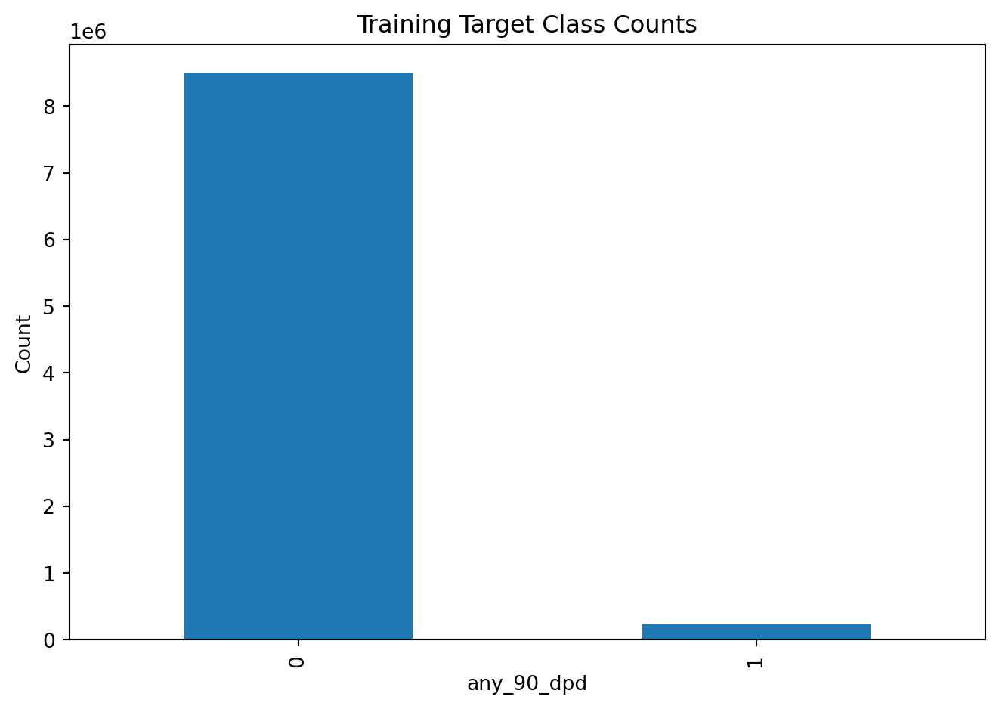
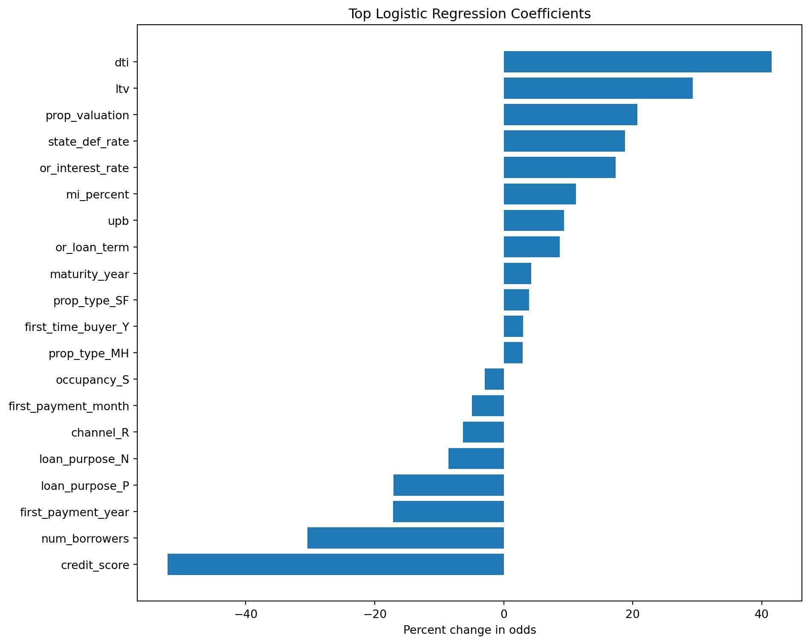
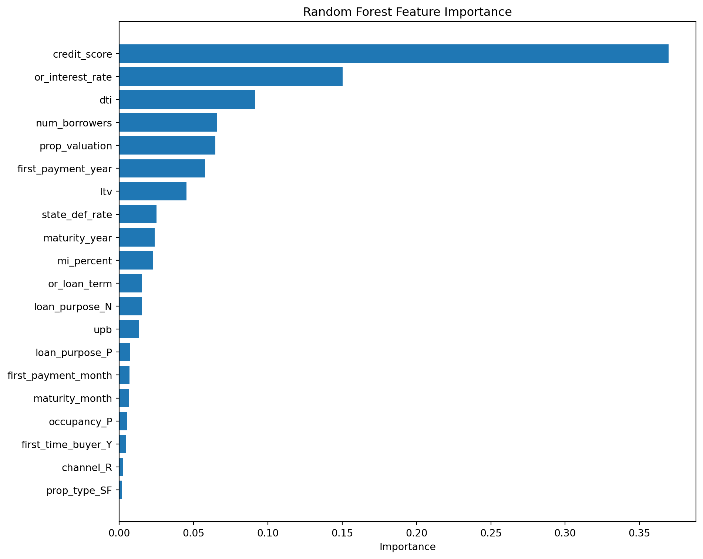
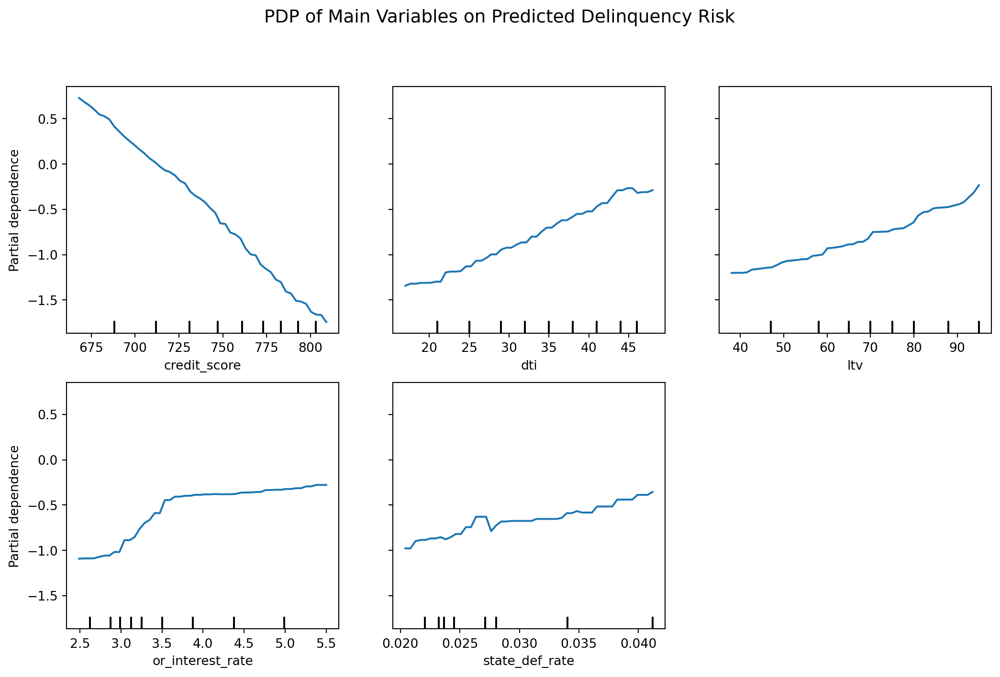
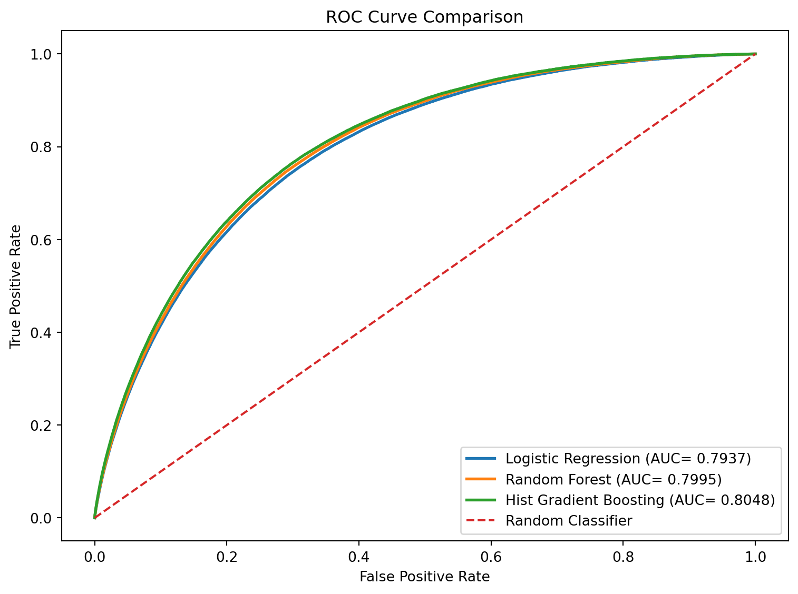

#--package load--
import numpy as np
import pandas as pd
import matplotlib.pyplot as plt
from sklearn import pipeline
from sklearn.inspection import PartialDependenceDisplay
from sklearn.preprocessing import StandardScaler
from sklearn.linear_model import LogisticRegression
from sklearn.ensemble import RandomForestClassifier, HistGradientBoostingClassifier
from sklearn.metrics import classification_report, roc_auc_score, roc_curve, confusion_matrix, precision_score, recall_score, f1_score, accuracy_scoreIntroduction
Package Load
Buying a home is one of the largest financial decisions most people make, yet most borrowers do not have access to the same analytical tools that lenders use to assess repayment risk. This project explores whether historical mortgage performance data can be used to build a consumer-oriented risk assessment tool. For the MVP, the goal is not to deliver the full final application, but to demonstrate that the core workflow is feasible: prepare the loan-level data, engineer a binary delinquency target, train a baseline model, evaluate its predictive performance, and generate app-ready risk outputs.
This MVP focuses on the modeling backbone of the project: data preparation, target engineering, baseline prediction, and evaluation. This project expands the original MVP idea by moving beyond a small cleaned sample and building a larger custom dataset from Freddie Mac Origination and Performance files from 2018 through 2022.
Objective
Can we use historical mortgage data to estimate the probability that a loan will ever become seriously delinquent, and then turn that result into a consumer-friendly risk signal?
For this version of the project, we use:
- Freddie Mac Origination and Performance data from 2018 through 2022
- a binary target called
any_90_dpd - an automated quarterly data-processing pipeline using a python script
- a stratified train/test split by annual quarter and delinquency status to handle imbalances
- Logistic Regression, Random Forest, and Histogram Gradient Boosting models
- ROC-AUC, classification reports, and threshold-based evaluation
- Low/Moderate/ High risk tiers for app demonstration
Data Source and Processing Summary
The dataset used for the models was created from Freddie Mac Origination and Performance data covering 2018 through 2022. The 2018 Q1 file was first cleaned manually to define the necessary steps to standardize the cleaning. This process was then wirtted into a Python script that cleaned each quarter separately.
The origination files contain borrower, loan, and property characteristics at the time of loan origination. The performance files contain monthly loan performance records, including delinquency behavior over time. Each quarter was processed separately and then merged by loan_id (which was dropped)
The pipeline performed the following major steps:
- read raw quarterly origination and performance files
- treated Freddie Mac placeholder values such as
9999,999,9, blanks, spaces, andXas missing values - engineered date features from first payment date and maturity date
- removed HARP loans
- converted MSA into a binary
metro_areafeature - one-hot encoded selected categorical variables
- imputed selected numeric fields using median values
- created the binary target variable
any_90_dpd - merged origination and performance records by loan ID
- saved each cleaned quarter as an intermediate file
- merged the processed quarters into final train and test files
The final train/test split was stratified by both quarter and delinquency status. Stratifying by quarter helps address class imbalances through economic periods, while stratifying by the 90+ days past due flag helps address the class imbalance of the target variable.
The state “default rate” feature, state_def_rate, was calculated from the training set only and then this was mapped onto both train and test records. This prevents the model from using test-period outcome information when constructing the feature.
Load Final Modeling Data
train_final= pd.read_csv("~/projects/data/homeloanadvisor/final_model_data/train_final.csv")
test_final= pd.read_csv("~/projects/data/homeloanadvisor/final_model_data/test_final.csv")
print("Train shape:", train_final.shape)
print("Test shape:", test_final.shape)Train shape: (8746063, 32)
Test shape: (3748322, 32)Target Variable and Class Balance
The target variable is any_90_dpd.
1represents a loan that became 90 or more days past due at least once during the observed performance period.0represents a loan that didn’t become 90 or more days past due.
train_counts= train_final["any_90_dpd"].value_counts().sort_index()
test_counts= test_final["any_90_dpd"].value_counts().sort_index()
print("Train target counts:")
print(train_counts)
print("\nTrain target rate:")
print(train_final["any_90_dpd"].value_counts(normalize=True).sort_index())
print("\nTest target counts:")
print(test_counts)
print("\nTest target rate:")
print(test_final["any_90_dpd"].value_counts(normalize=True).sort_index())Train target counts:
0 8501498
1 244565
Name: any_90_dpd, dtype: int64
Train target rate:
0 0.972037
1 0.027963
Name: any_90_dpd, dtype: float64
Test target counts:
0 3643508
1 104814
Name: any_90_dpd, dtype: int64
Test target rate:
0 0.972037
1 0.027963
Name: any_90_dpd, dtype: float64train_counts.plot(kind="bar")
plt.title("Training Target Class Counts")
plt.xlabel("any_90_dpd")
plt.ylabel("Count")
plt.tight_layout()
plt.show()
The target is heavily imbalanced because few loans become 90 or more days past due. Because of this imbalance, accuracy alone is not a useful evaluation metric. ROC-AUC, precision, recall, F1-score, and threshold behavior might prove more informative about model performance.
Train/Test Feature Setup
quarter_tag is kept in the final files for split checking, but it is removed from the matrix before modeling begins (the variable is also not numerical so it must be removed.)
#--without target--
x_train= train_final.drop(columns=["any_90_dpd", "quarter_tag"])
x_test= test_final.drop(columns=["any_90_dpd", "quarter_tag"])
#--target only--
y_train= train_final["any_90_dpd"]
y_test= test_final["any_90_dpd"]
print("x_train shape:", x_train.shape)
print("x_test shape:", x_test.shape)x_train shape: (8746063, 30)
x_test shape: (3748322, 30)The final modeling data is numeric and model-ready. Categorical variables were one-hot encoded during the preprocessing pipeline.
Modeling Strategy
This is a binary classification problem. The modeling strategy compares an interpretable baseline model with more flexible machine learning models.
The models used are:
- Logistic Regression
- Random Forest Classifier
- Histogram Gradient Boosting Classifier
Logistic regression is used as the baseline because it is interpretable and produces probabilities naturally. Random Forest and Histogram Gradient Boosting are included because they can capture nonlinear relationships and interactions among borrower, loan, and property characteristics. mi_cancel was dropped post script due to an error.
x_train= x_train.drop(columns=["mi_cancel"])
x_test= x_test.drop(columns=["mi_cancel"])Model 1: Logistic Regression
#-- logistic regression pipeline--
logistic= pipeline.Pipeline([
("scaler", StandardScaler()),
("logistic", LogisticRegression(class_weight="balanced", max_iter=1000, random_state=212))
])
#-- fitting--
logistic.fit(x_train, y_train)
#-- predictions--
logistic_pred= logistic.predict(x_test)
logistic_prob= logistic.predict_proba(x_test)[:, 1]
#-- evaluation--
logistic_auc= roc_auc_score(y_test, logistic_prob)
print(classification_report(y_test, logistic_pred))
print(f"Logistic Regression ROC-AUC: {logistic_auc:.4f}") precision recall f1-score support
0 0.99 0.71 0.82 3643508
1 0.07 0.74 0.12 104814
accuracy 0.71 3748322
macro avg 0.53 0.72 0.47 3748322
weighted avg 0.96 0.71 0.80 3748322
Logistic Regression ROC-AUC: 0.7937Logistic Regression Coefficients
logistic_coef= logistic.named_steps["logistic"].coef_[0]
comparing_coefficients= pd.DataFrame({
"variable": x_train.columns,
"coefficient": logistic_coef
}).sort_values("coefficient", key=abs, ascending=False)
comparing_coefficients["odds_ratio"]= np.exp(comparing_coefficients["coefficient"])
comparing_coefficients["percent_change_odds"]= (comparing_coefficients["odds_ratio"] - 1) * 100
comparing_coefficients.head(20)| variable | coefficient | odds_ratio | percent_change_odds | |
|---|---|---|---|---|
| 0 | credit_score | -0.736024 | 0.479015 | -52.098514 |
| 7 | num_borrowers | -0.362578 | 0.695880 | -30.412005 |
| 2 | dti | 0.347490 | 1.415511 | 41.551073 |
| 4 | ltv | 0.256952 | 1.292983 | 29.298342 |
| 9 | first_payment_year | -0.188470 | 0.828225 | -17.177450 |
| 8 | prop_valuation | 0.188467 | 1.207398 | 20.739776 |
| 16 | loan_purpose_P | -0.187094 | 0.829366 | -17.063443 |
| 28 | state_def_rate | 0.172039 | 1.187724 | 18.772404 |
| 5 | or_interest_rate | 0.159973 | 1.173479 | 17.347894 |
| 1 | mi_percent | 0.106310 | 1.112167 | 11.216670 |
| 3 | upb | 0.089543 | 1.093674 | 9.367422 |
| 15 | loan_purpose_N | -0.089473 | 0.914413 | -8.558719 |
| 6 | or_loan_term | 0.083233 | 1.086795 | 8.679515 |
| 24 | channel_R | -0.065398 | 0.936695 | -6.330544 |
| 10 | first_payment_month | -0.050754 | 0.950513 | -4.948708 |
| 11 | maturity_year | 0.042012 | 1.042907 | 4.290724 |
| 20 | prop_type_SF | 0.038791 | 1.039554 | 3.955357 |
| 22 | occupancy_S | -0.030084 | 0.970364 | -2.963625 |
| 14 | first_time_buyer_Y | 0.029380 | 1.029816 | 2.981621 |
| 18 | prop_type_MH | 0.028762 | 1.029180 | 2.917995 |
[write interpretation (one SD fpr each predictor)]
coef_viz= comparing_coefficients.head(20).sort_values("percent_change_odds", ascending=True)
plt.figure(figsize=(10, 8))
plt.barh(coef_viz["variable"], coef_viz["percent_change_odds"])
plt.title("Top Logistic Regression Coefficients")
plt.xlabel("Percent change in odds")
plt.ylabel("")
plt.tight_layout()
plt.show()
Model 2: Random Forest Classifier
#-- random forest classifier--
forest= RandomForestClassifier(
n_estimators=100,
max_depth=12,
min_samples_leaf=35,
max_features="sqrt",
class_weight="balanced",
random_state=212,
n_jobs=-1
)
#-- fitting--
forest.fit(x_train, y_train)
#-- predictions--
forest_pred= forest.predict(x_test)
forest_prob= forest.predict_proba(x_test)[:, 1]
#-- evaluation--
forest_auc= roc_auc_score(y_test, forest_prob)
print(classification_report(y_test, forest_pred))
print(f"Random Forest ROC-AUC: {forest_auc:.4f}") precision recall f1-score support
0 0.99 0.70 0.82 3643508
1 0.07 0.75 0.13 104814
accuracy 0.71 3748322
macro avg 0.53 0.73 0.47 3748322
weighted avg 0.96 0.71 0.80 3748322
Random Forest ROC-AUC: 0.7995forest_importance= pd.DataFrame({
"variable": x_train.columns,
"importance": forest.feature_importances_
}).sort_values("importance", ascending=False)
forest_importance.head(20)| variable | importance | |
|---|---|---|
| 0 | credit_score | 0.369578 |
| 5 | or_interest_rate | 0.150357 |
| 2 | dti | 0.091469 |
| 7 | num_borrowers | 0.065783 |
| 8 | prop_valuation | 0.064546 |
| 9 | first_payment_year | 0.057647 |
| 4 | ltv | 0.045342 |
| 28 | state_def_rate | 0.025113 |
| 11 | maturity_year | 0.023727 |
| 1 | mi_percent | 0.022689 |
| 6 | or_loan_term | 0.015248 |
| 15 | loan_purpose_N | 0.015078 |
| 3 | upb | 0.013387 |
| 16 | loan_purpose_P | 0.007171 |
| 10 | first_payment_month | 0.006894 |
| 12 | maturity_month | 0.006263 |
| 21 | occupancy_P | 0.005083 |
| 14 | first_time_buyer_Y | 0.004314 |
| 24 | channel_R | 0.002321 |
| 20 | prop_type_SF | 0.001696 |
top_forest= forest_importance.head(20).sort_values("importance", ascending=True)
plt.figure(figsize=(10, 8))
plt.barh(top_forest["variable"], top_forest["importance"])
plt.title("Random Forest Feature Importance")
plt.xlabel("Importance")
plt.ylabel("")
plt.tight_layout()
plt.show()
Model 3: Histogram Gradient Boosting
#-- histogram gradient boosting classifier--
hgb= HistGradientBoostingClassifier(
max_iter=100,
learning_rate=0.08,
max_leaf_nodes=50,
l2_regularization=0.1,
random_state=212,
class_weight="balanced"
)
#-- fitting--
hgb.fit(x_train, y_train)
#-- predictions--
hgb_pred= hgb.predict(x_test)
hgb_prob= hgb.predict_proba(x_test)[:, 1]
#-- evaluation--
hgb_auc= roc_auc_score(y_test, hgb_prob)
print(classification_report(y_test, hgb_pred))
print(f"Hist Gradient Boosting ROC-AUC: {hgb_auc:.4f}") precision recall f1-score support
0 0.99 0.70 0.82 3643508
1 0.07 0.77 0.13 104814
accuracy 0.70 3748322
macro avg 0.53 0.73 0.47 3748322
weighted avg 0.96 0.70 0.80 3748322
Hist Gradient Boosting ROC-AUC: 0.8048Partial Dependence Plot
#--PDP--
fig, ax = plt.subplots(figsize=(11, 7))
PartialDependenceDisplay.from_estimator(hgb, x_test, features=[ "credit_score", "dti", "ltv", "or_interest_rate", "state_def_rate"], kind="average", grid_resolution=50, ax=ax)
plt.suptitle("PDP of Main Variables on Predicted Delinquency Risk", y=1.05,fontsize=14
)
plt.tight_layout()
plt.show()
Model Comparison
model_compare= pd.DataFrame({
"model": ["Logistic Regression", "Random Forest", "Hist Gradient Boosting"],
"roc_auc": [logistic_auc, forest_auc, hgb_auc]
}).sort_values("roc_auc", ascending=False)
model_compare| model | roc_auc | |
|---|---|---|
| 2 | Hist Gradient Boosting | 0.804834 |
| 1 | Random Forest | 0.799509 |
| 0 | Logistic Regression | 0.793694 |
ROC Curve Comparison
model_probs= {
"Logistic Regression": logistic_prob,
"Random Forest": forest_prob,
"Hist Gradient Boosting": hgb_prob
}
model_aucs= {
"Logistic Regression": logistic_auc,
"Random Forest": forest_auc,
"Hist Gradient Boosting": hgb_auc
}
fig, ax= plt.subplots(figsize=(8, 6))
for model_name, model_prob in model_probs.items():
fpr, tpr, thresholds= roc_curve(y_test, model_prob)
ax.plot(fpr, tpr, lw=2, label=f"{model_name} (AUC= {model_aucs[model_name]:.4f})")
ax.plot([0, 1], [0, 1], linestyle="--", label="Random Classifier")
ax.set_title("ROC Curve Comparison")
ax.set_xlabel("False Positive Rate")
ax.set_ylabel("True Positive Rate")
ax.legend(loc="lower right")
plt.tight_layout()
plt.show()
The ROC curve comparison shows how well each model separates loans that become 90+ days past due from those that do not. Because the target class is imbalanced, the final model should not be selected by ROC-AUC alone. Precision, recall, threshold behavior, interpretability, and the intended use of the app should also be considered.
Threshold-Based Evaluation
For the app, the default classification threshold of 0.50 may not be the best choice. A lower threshold can increase recall for risky loans, but it may also increase false positives.
threshold_results= []
for threshold in [0.05, 0.10, 0.20, 0.30, 0.50]:
preds= (hgb_prob >= threshold).astype(int)
threshold_results.append({
"threshold": threshold,
"precision": precision_score(y_test, preds, zero_division=0),
"recall": recall_score(y_test, preds, zero_division=0),
"f1": f1_score(y_test, preds, zero_division=0),
"accuracy": accuracy_score(y_test, preds)
})
threshold_results= pd.DataFrame(threshold_results)
threshold_results| threshold | precision | recall | f1 | accuracy | |
|---|---|---|---|---|---|
| 0 | 0.05 | 0.028959 | 0.998865 | 0.056285 | 0.063376 |
| 1 | 0.10 | 0.032502 | 0.990889 | 0.062940 | 0.174960 |
| 2 | 0.20 | 0.040201 | 0.958670 | 0.077166 | 0.358825 |
| 3 | 0.30 | 0.048228 | 0.911052 | 0.091607 | 0.494758 |
| 4 | 0.50 | 0.068390 | 0.765632 | 0.125564 | 0.701807 |
threshold= 0.10
hgb_pred_threshold= (hgb_prob >= threshold).astype(int)
cm= confusion_matrix(y_test, hgb_pred_threshold)
print("Threshold:", threshold)
print("\nConfusion matrix:\n", cm)
print(f"Accuracy: {accuracy_score(y_test, hgb_pred_threshold):.3f}")
print(f"Precision: {precision_score(y_test, hgb_pred_threshold, zero_division=0):.3f}")
print(f"Recall: {recall_score(y_test, hgb_pred_threshold, zero_division=0):.3f}")
print(f"F1-score: {f1_score(y_test, hgb_pred_threshold, zero_division=0):.3f}")Threshold: 0.1
Confusion matrix:
[[ 551947 3091561]
[ 955 103859]]
Accuracy: 0.175
Precision: 0.033
Recall: 0.991
F1-score: 0.063Risk Tier Function
The predicted probability is converted into a simple risk label for the app.
def assign_risk_tier(probability):
if probability < 0.05:
return "Low"
elif probability < 0.10:
return "Moderate"
else:
return "High"Demo Borrower Profiles
The demo profiles are built from a typical borrower row using median feature values from the training set. Then selected values such as credit score, debt-to-income, loan-to-value, loan amount, and interest rate are changed to create lower-risk, moderate-risk, and higher-risk examples.
demo_base= x_train.median(numeric_only=True).to_dict()
low_risk= demo_base.copy()
low_risk.update({
"credit_score": 780,
"dti": 28,
"ltv": 70,
"upb": 250000,
"or_interest_rate": 3.2
})
moderate_risk= demo_base.copy()
moderate_risk.update({
"credit_score": 700,
"dti": 38,
"ltv": 82,
"upb": 360000,
"or_interest_rate": 4.0
})
high_risk= demo_base.copy()
high_risk.update({
"credit_score": 620,
"dti": 50,
"ltv": 95,
"upb": 500000,
"or_interest_rate": 5.5
})
demo_profiles= pd.DataFrame([low_risk, moderate_risk, high_risk])
demo_profiles= demo_profiles[x_train.columns]final_model= hgb
demo_profiles["predicted_probability"]= final_model.predict_proba(demo_profiles[x_train.columns])[:, 1]
demo_profiles["risk_tier"]= demo_profiles["predicted_probability"].apply(assign_risk_tier)
demo_display= demo_profiles[["credit_score", "ltv", "dti", "or_interest_rate", "predicted_probability", "risk_tier"]].copy()
demo_display["predicted_probability"]= demo_display["predicted_probability"].round(3)
demo_display| credit_score | ltv | dti | or_interest_rate | predicted_probability | risk_tier | |
|---|---|---|---|---|---|---|
| 0 | 780 | 70 | 28 | 3.2 | 0.258 | High |
| 1 | 700 | 82 | 38 | 4.0 | 0.760 | High |
| 2 | 620 | 95 | 50 | 5.5 | 0.873 | High |
These examples show how the model could support the future HomeLoanAdvisor app in translating model probabilities into a consumer friendly risk label, easy for a consumer to understand.
Final Model Choice
Our final model should be selected using a combination of predictive performance and practical use. Its justified to default to Logistic Regresion but Histogram Gradient Boosting may provide a slightly stronger performance, while Logistic Regression is easier to interpret. Because this project is intended to support a consumer-facing advisory tool, model outputs should be communicated carefully and should not imply certainty. A reasonable final approach is to use the best-performing model for probability estimation while keeping Logistic Regression as the interpretable baseline for explaining which loan characteristics are associated with higher or lower delinquency risk.
Limitations
The dataset is based on Freddie Mac historical mortgage data and may not represent all loan types or borrower populations. The target variable identifies whether a loan ever became 90+ days past due during the observed performance period, but future delinquency risk may shift under different economic conditions. The risk tiers are prototype thresholds and have not been optimized for a real business or consumer decision. The model should be interpreted as an educational risk signal rather than financial advice or a lending decision tool.
Conclusion
Our project demonstrates that Freddie Mac origination and performance data can be transformed into a model-ready dataset for predicting serious mortgage delinquency. The custom pipeline creates a larger and more defensible dataset than the initial MVP sample, while the modeling workflow shows how predicted probabilities can be turned into consumer-friendly risk tiers. The final Home Loan Advisor workflow combines data engineering, classification modeling, evaluation, and app-ready risk interpretation.